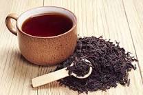
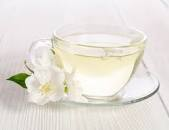

Top 4 best tea in the world
Black Tea
- Black tea, like green tea, is known for powerful health properties and has been extensively researched. It has the highest caffeine content of all the true teas and can be a great replacement for a cup of coffee. It also contains an amino acid known as L-theanine, which helps to slow the absorption of caffeine and produces a longer-lasting kick of energy—without the jitters.Research shows that drinking three or more cups of black tea daily can reduce the risk of coronary heart disease. For Americans who are prone to heart disease, drinking tea is one easy way to improve health with very few side effects. Black tea contains polyphenols that help to streamline digestion and alleviate problems. One study found that these polyphenols help to promote the growth of good gut bacteria with inhibiting pathogens that can make you sick.

Green Tea
-Green tea is considered one of the healthiest teas available. It's typically modestly processed and features delicate leaves that are either steamed or roasted. The flavor is earthy and grassy with notes of seaweed.
Green tea is packed with antioxidants and catechins including one particularly well-researched one called EGCG or epigallocatechin gallate. Research shows this tea catechin may help to protect heart health by decreasing inflammation and improving blood circulation. By improving circulation, drinking green tea helps to lower the risk of heart disease including heart attacks. The anti-inflammatory properties of the tea help to lower blood pressure and reduce LDL cholesterol.
Green tea may also help to accelerate weight loss by boosting metabolism and encouraging the breakdown of fats—rather than glucose—into energy. Studies have also shown that green tea may be able to prevent the replication of certain types of cancerous cells including those found in breast cancer and lung cancer. In some conditions, green tea may even be able to induce apoptosis of the cancer cells themselves.
White tea
- White tea is the least processed of the true teas. It's tea leaves maintain a natural green hue as the leaves are simply sun-dried after harvesting. It has less caffeine content compared to other true teas so you can drink it all day long. White tea also offers a delicate flavor that is slightly floral and nuanced.
Drinking white tea may help to prevent the onset of type 2 diabetes. One study found that drinking four or more cups of white tea per day may lower your risk of developing type 2 diabetes. The antioxidants in the tea work to decrease insulin resistance and can regulate blood sugar levels.

Hibiscus Tea
-Hibiscus tea is a delicious floral tea made from the calyxes of the plant. It brews into a magenta hue with a flavor similar to cranberries. It is the perfect blend of tart and sweet and offers medicinal benefits that have been enjoyed by indigenous societies for centuries.
Studies show that hibiscus tea demonstrates antitumoral properties. One such study published in the Brazilian Journal of Biology found that phenolic compounds and flavonoids helped to eliminate free radicals and prevent tumor growth. These properties may help to also prevent aging by protecting cells.
Hibiscus tea also boasts heart health benefits thanks to anti-inflammatory and antioxidant properties. One meta-analysis found that hibiscus tea significantly decreases systolic and diastolic blood pressure.
Tomasz Dang